Más de una década después de los acontecimientos de 'Avatar',
los Na'vi Jake Sully, Neytiri y sus hijos viven en paz en los bosques de Pandora hasta que
regresan los hombres del cielo. Entonces comienzan los problemas que persiguen sin descanso a la
familia Sully, que decide hacer un gran sacrificio para mantener a su pueblo a salvo y seguir ellos
con vida.Después de dos años acechando por las calles de la ciudad como Batman
(Robert Pattinson), e infundiendo miedo en las mentes perversas de los criminales, Bruce Wayne está
sumido en las profundidades de las sombras de Gotham City. Este vigilante solitario cuenta con pocos
aliados de confianza y eso le ha llevado a convertirse en la única encarnación de la venganza entre
sus conciudadanos. Cuando un asesino apunta a la élite de Gotham con una serie de maquinaciones
sádicas, un rastro de pistas crípticas lleva a Batman a realizar una investigación en el inframundo.Después de más de treinta años de servicio como uno de los mejores aviadores
de la Armada, Pete "Mavericks" Mitchel (Tom Cruise) se encuentra donde siempre quiso estar: superando
los límites como un valiente piloto de pruebas y esquivando el ascenso de rango, que no le dejaría
volar emplazándolo en tierra. Cuando es destinado a la academia de Top Gun con el objetivo de
entrenar a los pilotos de élite para realizar una peligrosa misión en territorio enemigo,
Maverick se encuentra allí con el joven teniente Bradley Bradshaw (Miles Teller),
el hijo de su difunto amigo "Goose".Cuando una ruptura interdimensional altera la realidad, Evelyn
(Michelle Yeoh), una inmigrante china en Estados Unidos, se ve envuelta en una aventura salvaje
en la que solo ella puede salvar el mundo. Perdida en los mundos infinitos del multiverso, esta
heroína inesperada debe canalizar sus nuevos poderes para luchar contra los extraños y
desconcertantes peligros del multiverso mientras el destino del mundo pende de un hiloRelato de las terribles experiencias y la angustia de un joven soldado
alemán en el frente occidental durante la Primera Guerra Mundial.Basada en una de las series de videojuegos más vendidas y aclamadas por
la crítica de todos los tiempos, "Uncharted" presenta a un joven, astuto y carismático, Nathan
Drake (Tom Holland) en su primera aventura como cazatesoros con su ingenioso compañero Victor
“Sully” Sullivan (Mark Wahlberg). En una aventura de acción que se extiende por todo el mundo,
ambos se embarcan en una peligrosa búsqueda de “el mayor tesoro nunca antes encontrado” al
tiempo que rastrean las claves que les podrían conducir al hermano de Nathan, perdido hace ya
mucho tiempo.Cuatro años después de la destrucción de Isla Nublar, los dinosaurios
ahora conviven -y cazan- con los seres humanoscio en todo el mundo. Este frágil equilibrio remodelará
el futuro y determinará, de una vez por todas, si los seres humanos seguirán en la cúspide de los
depredadores en un planeta que comparten con los animales más temibles de la creación.
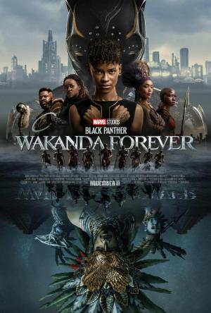
La reina Ramonda (Angela Bassett), Shuri (Letitia Wright),
M’Baku (Winston Duke), Okoye (Danai Gurira) y las Dora Milaje (incluida Florence Kasumba),
luchan para proteger su nación de la injerencia de potencias mundiales a raíz de la muerte del
rey T’Challa. Mientras los wakandianos se esfuerzan por adaptarse a su nueva etapa, los héroes
deben actuar unidos, con la ayuda del Perro de la Guerra Nakia (Lupita Nyong’o) y Everett Ross
(Martin Freeman), y forzar un nuevo destino para el reino de Wakanda.Cinco asesinos a sueldo se encuentran a bordo de un tren bala que
viaja de Tokio a Morioka con unas pocas paradas intermedias. Descubren que sus misiones no
son ajenas entre sí. La pregunta es quién saldrá vivo del tren y qué les espera en la
estación final.Viaja a lo desconocido con el Doctor Strange, quien, con la ayuda
de tanto antiguos como nuevos aliados místicos, recorre las complejas y peligrosas realidades
alternativas del multiverso para enfrentarse a un nuevo y misterioso adversario.En Islandia, en pleno siglo X, un príncipe nórdico (Skarsgard)
busca vengar a toda costa la muerte de su padre.
Animación
La historia del origen de Buzz Lightyear, el héroe que inspiró el
juguete, y que nos da a conocer al legendario Guardián Espacial que acabaría contando con
generaciones de fans.Versión musical en animación stop motion del famoso cuento de 'Pinocho',
ambientada en la Italia fascista, durante la década de 1930. Guillermo del Toro y Mark Gustafson
dirigen esta película, que en la versión original cuenta con un reparto estelar de voces: Ewan
McGregor (Pepito Grillo), David Bradley (Geppetto) y el debutante Gregory Mann (Pinocho).
También participan Finn Wolfhard, Cate Blanchett, John Turturro, Ron Perlman, Tim Blake Nelson,
Burn Gorman, Christoph Waltz y Tilda Swinton.Mei Lee, una niña de 13 años un poco rara pero segura de sí misma,
se debate entre ser la hija obediente que su madre quiere que sea y el caos propio de la
adolescencia. Ming, su protectora y ligeramente exigente madre, no se separa nunca de ella
lo que es una situación poco deseable para una adolescente. Y por si los cambios en su vida
y en su cuerpo no fueran suficientes, cada vez que se emociona demasiado (lo que le ocurre
prácticamente todo el tiempo), se convierte en un panda rojo gigante.
Aventura
Más de una década después de los acontecimientos de 'Avatar',
los Na'vi Jake Sully, Neytiri y sus hijos viven en paz en los bosques de Pandora hasta que
regresan los hombres del cielo. Entonces comienzan los problemas que persiguen sin descanso a la
familia Sully, que decide hacer un gran sacrificio para mantener a su pueblo a salvo y seguir ellos
con vida.Basada en una de las series de videojuegos más vendidas y aclamadas por
la crítica de todos los tiempos, "Uncharted" presenta a un joven, astuto y carismático, Nathan
Drake (Tom Holland) en su primera aventura como cazatesoros con su ingenioso compañero Victor
“Sully” Sullivan (Mark Wahlberg). En una aventura de acción que se extiende por todo el mundo,
ambos se embarcan en una peligrosa búsqueda de “el mayor tesoro nunca antes encontrado” al
tiempo que rastrean las claves que les podrían conducir al hermano de Nathan, perdido hace ya
mucho tiempo.La historia del origen de Buzz Lightyear, el héroe que inspiró el
juguete, y que nos da a conocer al legendario Guardián Espacial que acabaría contando con
generaciones de fans.Cuatro años después de la destrucción de Isla Nublar, los dinosaurios
ahora conviven -y cazan- con los seres humanos en todo el mundo. Este frágil equilibrio remodelará
el futuro y determinará, de una vez por todas, si los seres humanos seguirán en la cúspide de los
depredadores en un planeta que comparten con los animales más temibles de la creación.La reina Ramonda (Angela Bassett), Shuri (Letitia Wright),
M’Baku (Winston Duke), Okoye (Danai Gurira) y las Dora Milaje (incluida Florence Kasumba),
luchan para proteger su nación de la injerencia de potencias mundiales a raíz de la muerte del
rey T’Challa. Mientras los wakandianos se esfuerzan por adaptarse a su nueva etapa, los héroes
deben actuar unidos, con la ayuda del Perro de la Guerra Nakia (Lupita Nyong’o) y Everett Ross
(Martin Freeman), y forzar un nuevo destino para el reino de Wakanda.Mei Lee, una niña de 13 años un poco rara pero segura de sí misma,
se debate entre ser la hija obediente que su madre quiere que sea y el caos propio de la
adolescencia. Ming, su protectora y ligeramente exigente madre, no se separa nunca de ella
lo que es una situación poco deseable para una adolescente. Y por si los cambios en su vida
y en su cuerpo no fueran suficientes, cada vez que se emociona demasiado (lo que le ocurre
prácticamente todo el tiempo), se convierte en un panda rojo gigante.En Islandia, en pleno siglo X, un príncipe nórdico (Skarsgard)
busca vengar a toda costa la muerte de su padre.
Bélico
Relato de las terribles experiencias y la angustia de un joven soldado
alemán en el frente occidental durante la Primera Guerra Mundial.
Ciencia ficción
Más de una década después de los acontecimientos de 'Avatar',
los Na'vi Jake Sully, Neytiri y sus hijos viven en paz en los bosques de Pandora hasta que
regresan los hombres del cielo. Entonces comienzan los problemas que persiguen sin descanso a la
familia Sully, que decide hacer un gran sacrificio para mantener a su pueblo a salvo y seguir ellos
con vida.Cuando una ruptura interdimensional altera la realidad, Evelyn
(Michelle Yeoh), una inmigrante china en Estados Unidos, se ve envuelta en una aventura salvaje
en la que solo ella puede salvar el mundo. Perdida en los mundos infinitos del multiverso, esta
heroína inesperada debe canalizar sus nuevos poderes para luchar contra los extraños y
desconcertantes peligros del multiverso mientras el destino del mundo pende de un hiloLa historia del origen de Buzz Lightyear, el héroe que inspiró el
juguete, y que nos da a conocer al legendario Guardián Espacial que acabaría contando con
generaciones de fans.Cuatro años después de la destrucción de Isla Nublar, los dinosaurios
ahora conviven -y cazan- con los seres humanos en todo el mundo. Este frágil equilibrio remodelará
el futuro y determinará, de una vez por todas, si los seres humanos seguirán en la cúspide de los
depredadores en un planeta que comparten con los animales más temibles de la creación.La reina Ramonda (Angela Bassett), Shuri (Letitia Wright),
M’Baku (Winston Duke), Okoye (Danai Gurira) y las Dora Milaje (incluida Florence Kasumba),
luchan para proteger su nación de la injerencia de potencias mundiales a raíz de la muerte del
rey T’Challa. Mientras los wakandianos se esfuerzan por adaptarse a su nueva etapa, los héroes
deben actuar unidos, con la ayuda del Perro de la Guerra Nakia (Lupita Nyong’o) y Everett Ross
(Martin Freeman), y forzar un nuevo destino para el reino de Wakanda.
Comedia
Cuando una ruptura interdimensional altera la realidad, Evelyn
(Michelle Yeoh), una inmigrante china en Estados Unidos, se ve envuelta en una aventura salvaje
en la que solo ella puede salvar el mundo. Perdida en los mundos infinitos del multiverso, esta
heroína inesperada debe canalizar sus nuevos poderes para luchar contra los extraños y
desconcertantes peligros del multiverso mientras el destino del mundo pende de un hiloTras la Semana de la moda, Carl y Yaya, pareja de modelos e
influencers, son invitados a un yate en un crucero de lujo. Mientras que la tripulación
brinda todas las atenciones necesarias a los ricos invitados, el capitán se niega a salir de
su cabina, a pesar de la llegada inminente de la célebre cena de gala. Los eventos toman un giro
inesperado y el equilibrio de poder se invierte cuando se levanta una tormenta que pone en peligro
el confort de los pasajeros.La historia del origen de Buzz Lightyear, el héroe que inspiró el
juguete, y que nos da a conocer al legendario Guardián Espacial que acabaría contando con
generaciones de fans.Cinco asesinos a sueldo se encuentran a bordo de un tren bala que
viaja de Tokio a Morioka con unas pocas paradas intermedias. Descubren que sus misiones no
son ajenas entre sí. La pregunta es quién saldrá vivo del tren y qué les espera en la
estación final.Cuando el multimillonario Miles Bron (Edward Norton) invita a algunos de
sus allegados a una escapada a su isla griega privada, pronto queda claro que no todo es perfecto
en el paraíso. Y cuando alguien aparece muerto, ¿quién mejor que Benoit Blanc para desentrañar
todas las capas del misterio?Mei Lee, una niña de 13 años un poco rara pero segura de sí misma,
se debate entre ser la hija obediente que su madre quiere que sea y el caos propio de la
adolescencia. Ming, su protectora y ligeramente exigente madre, no se separa nunca de ella
lo que es una situación poco deseable para una adolescente. Y por si los cambios en su vida
y en su cuerpo no fueran suficientes, cada vez que se emociona demasiado (lo que le ocurre
prácticamente todo el tiempo), se convierte en un panda rojo gigante.
Documental
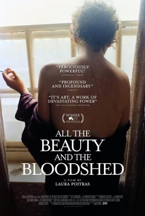
Sigue la vida de la artista Nan Goldin y su activismo contra la dinastía
farmacéutica de los Sackler, responsables de la mayor epidemia de opioides de la historia de
Estados Unidos.
Drama
Film semiautobiográfico de la propia infancia y juventud de Spielberg.
Ambientada a finales de la década de 1950 y principios de los años 60, un niño de Arizona llamado
Sammy Fabelman, influido por su excéntrica madre, artista (Michelle Williams), y su pragmático padre,
ingeniero informático (Paul Dano), descubre un secreto familiar devastador y explora cómo el poder
de las películas puede ayudarlo a contar historias y a forjar su propia identidad.Después de más de treinta años de servicio como uno de los mejores aviadores
de la Armada, Pete "Mavericks" Mitchel (Tom Cruise) se encuentra donde siempre quiso estar: superando
los límites como un valiente piloto de pruebas y esquivando el ascenso de rango, que no le dejaría
volar emplazándolo en tierra. Cuando es destinado a la academia de Top Gun con el objetivo de
entrenar a los pilotos de élite para realizar una peligrosa misión en territorio enemigo,
Maverick se encuentra allí con el joven teniente Bradley Bradshaw (Miles Teller),
el hijo de su difunto amigo "Goose".Ambientada en una isla remota frente a la costa oeste de Irlanda en 1923,
narra la historia de dos amigos de toda la vida, Pádraic y Colm, quienes se encuentran en un
callejón sin salida cuando Colm pone fin a su amistad de un modo abrupto. Un Pádraic atónito,
con la única comprensión de su hermana Siobhán y del simple Dominic, se esfuerza por reconstruir
la relación, negándose a aceptar las negativas de su amigo de siempre. Cuando Colm le plantea a
Pádraic un ultimátum desesperado, los acontecimientos se precipitan y provocan consecuencias
traumáticas.Inspirada en la historia real del fiscal Julio Strassera,
Luis Moreno Ocampo y su joven equipo jurídico que se atrevieron a acusar, contra viento
y marea, a contrarreloj y bajo constante amenaza, a los altos mandos de la sangrienta dictadura
militar argentina (1976-1983) en el llamado Juicio a las Juntas de mediados de los años 80. Una
batalla de David contra Goliat, con los héroes menos esperados.Relato de las terribles experiencias y la angustia de un joven soldado
alemán en el frente occidental durante la Primera Guerra Mundial.Tras la Semana de la moda, Carl y Yaya, pareja de modelos e
influencers, son invitados a un yate en un crucero de lujo. Mientras que la tripulación
brinda todas las atenciones necesarias a los ricos invitados, el capitán se niega a salir de
su cabina, a pesar de la llegada inminente de la célebre cena de gala. Los eventos toman un giro
inesperado y el equilibrio de poder se invierte cuando se levanta una tormenta que pone en peligro
el confort de los pasajeros.
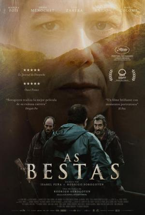
Antoine y Olga son una pareja francesa que se instaló hace tiempo en
una aldea del interior de Galicia. Allí llevan una vida tranquila, aunque su convivencia con los
lugareños no es tan idílica como desearían. Un conflicto con sus vecinos, los hermanos Anta, hará
que la tensión crezca en la aldea hasta alcanzar un punto de no retorno.
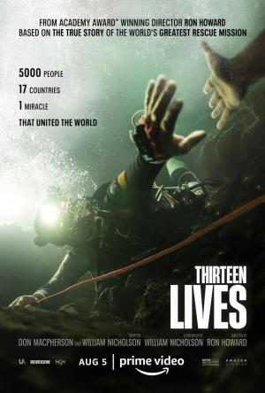
Basada en la historia real, "Trece vidas" es el relato del rescate de un
equipo de fútbol de la cueva de Tham Luang, en Tailandia, tras quedar atrapado por las lluvias
torrenciales y peligrosas inundaciones.La película explora la vida y la música de Elvis Presley (Butler) a
través del prisma de su relación con el coronel Tom Parker (Hanks), su enigmático manager. La
historia profundiza en la compleja dinámica que existía entre Presley y Parker que abarca más de
20 años, desde el ascenso de Presley a la fama hasta su estrellato sin precedentes, en el contexto
de la revolución cultural y la pérdida de la inocencia en Estados Unidos. Y en el centro de ese
periplo está Priscilla Presley (Olivia DeJonge), una de las personas más importantes e influyentes
en la vida de Elvis.La mundialmente famosa Lydia Tár está a solo unos días de afrontar el
mayor reto de su carrera profesional: grabar la sinfonía que la llevará a las alturas de su ya
formidable carrera. Pero su vida personal y sus decisiones van a ir interfiriendo en su carrera
musical con consecuencias imprevisibles.
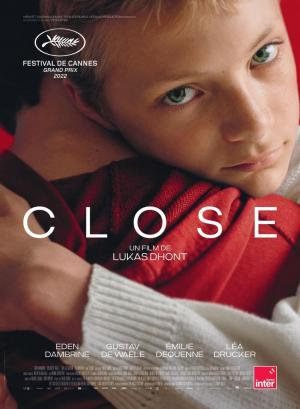
Léo y Rémi, de 13 años, son amigos de toda la vida. Hasta que un suceso
impensable los separa. Léo se acerca entonces a Sophie, la madre de Rémi, para tratar de entender.
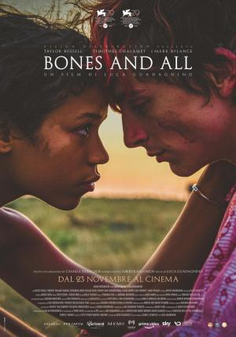
Cuenta la historia del primer amor entre Maren, una joven que está
aprendiendo a sobrevivir al margen de la sociedad, y Lee, un vagabundo con ideas muy intensas
que vive marginado. Cuando se conocen, se unen en un viaje de mil millas que les lleva por
carreteras, pasajes ocultos y caminos alternos en los Estados Unidos de Ronald Reagan. Pero a
pesar de sus esfuerzos, todos los caminos conducen a sus aterradores pasados y a una última
parada que determinará si su amor puede sobrevivir a su forma de ser.Versión musical en animación stop motion del famoso cuento de 'Pinocho',
ambientada en la Italia fascista, durante la década de 1930. Guillermo del Toro y Mark Gustafson
dirigen esta película, que en la versión original cuenta con un reparto estelar de voces: Ewan
McGregor (Pepito Grillo), David Bradley (Geppetto) y el debutante Gregory Mann (Pinocho). También
participan Finn Wolfhard, Cate Blanchett, John Turturro, Ron Perlman, Tim Blake Nelson, Burn Gorman,
Christoph Waltz y Tilda Swinton.La reina Ramonda (Angela Bassett), Shuri (Letitia Wright),
M’Baku (Winston Duke), Okoye (Danai Gurira) y las Dora Milaje (incluida Florence Kasumba),
luchan para proteger su nación de la injerencia de potencias mundiales a raíz de la muerte del
rey T’Challa. Mientras los wakandianos se esfuerzan por adaptarse a su nueva etapa, los héroes
deben actuar unidos, con la ayuda del Perro de la Guerra Nakia (Lupita Nyong’o) y Everett Ross
(Martin Freeman), y forzar un nuevo destino para el reino de Wakanda.
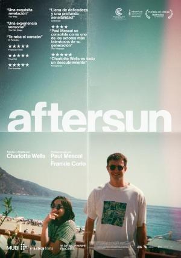
Sophie (Francesca Corio / Celia Rowlson-Hall como la Sophie adulta)
reflexiona sobre la alegría compartida y la melancolía privada de unas vacaciones que hizo con
su padre (Paul Mescal) 20 años atrás. Los recuerdos reales e imaginarios llenan los espacios
entre las imágenes mientras intenta reconciliar al padre que conoció con el hombre que no conoció.La familia Solé lleva varias generaciones cultivando una gran extensión
de melocotoneros en Alcarràs, una pequeña localidad rural de Cataluña. Pero este verano puede
que sea su última cosecha: la fruta ya no renta y los paneles solares están
sustituyendo a los árboles.Hae-Joon, un veterano detective, investiga la sospechosa muerte de
un hombre en la cima de una montaña. Pronto, comenzará a sospechar de Sore, la mujer del
difunto, mientras la atracción que siente por ella le desestabilizará.Tras una infancia traumática, y tras aparecer en los años cuarenta
en las portadas de unas cuantas revistas y calendarios, la atractiva joven Norma Jeane se
convierte en actriz en el Hollywood de los años cincuenta. Pronto se volverá mundialmente
famosa con el nombre artístico de 'Marilyn Monroe', convirtiéndose en el mayor sex-symbol
del planeta. Pero sus aclamadas apariciones en la pantalla contrastan con los problemas
amorosos, la explotación, el abuso de poder y la adicción a las drogas que enfrenta en su
vida privada.
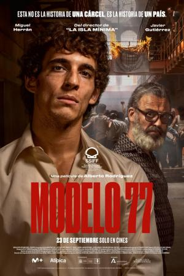
Cárcel Modelo. Barcelona, 1977. Manuel (Miguel Herrán), un joven
contable, encarcelado y pendiente de juicio por cometer un desfalco, se enfrenta a una posible
pena de entre 10 y 20 años, un castigo desproporcionado para la cuantía de su delito. Pronto,
junto a su compañero de celda, Pino (Javier Gutiérrez), se une a un grupo de presos comunes que
se está organizando para exigir una amnistía. Se inicia una guerra por la libertad que hará
tambalearse al sistema penitenciario español. Si las cosas están cambiando fuera, dentro también
tendrán que hacerlo.
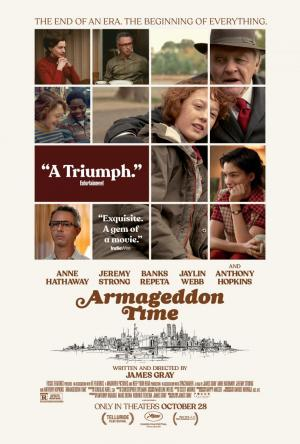
Paul Graff lleva una infancia tranquila en los suburbios neoyorquinos.
Junto a Johnny, un compañero de clase excluido por su color de piel, se dedican a hacer
travesuras. Paul cree contar con la protección de su madre, presidenta de la asociación de
madres y padres de alumnos, y de su abuelo, con el que mantiene una muy buena relación. Pero,
tras un incidente, es enviado a una escuela privada, cuyo consejo de administración cuenta
con el padre de Donald Trump como uno de sus miembros. El elitismo y el racismo sin complejos
con el que se encuentra cambiarán drásticamente su mundo.
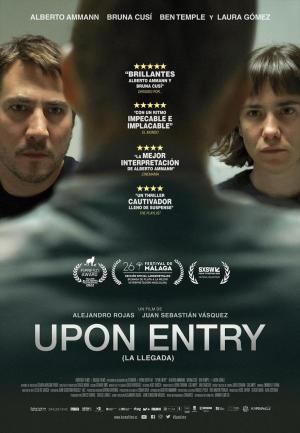
Diego, urbanista venezolano, y Elena, bailarina de Barcelona, se
mudan a Estados Unidos con sus visados aprobados para empezar una nueva vida. Su intención
es impulsar sus carreras profesionales y formar una familia en "la tierra de las oportunidades".
Pero al entrar en la zona de inmigración del aeropuerto de Nueva York son conducidos a la
sala de inspección secundaria, donde serán sometidos a un desagradable proceso de inspección
por los agentes de aduanas y a un interrogatorio psicológicamente extenuante, en un intento
de descubrir si la pareja puede tener algo que ocultar.
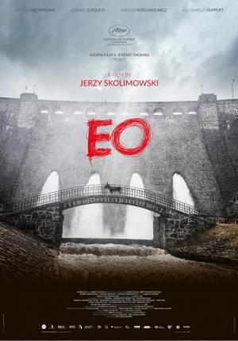
El mundo es un lugar misterioso, sobre todo visto a través de
los ojos de un animal. En su camino, EO, un asno gris de ojos melancólicos, se topa con
buena gente y otra no tan buena, conoce la alegría y la pena, y la rueda de la fortuna
transforma, según el momento, su buena suerte en desastre, y su desdicha en felicidad
inesperada. Pero nunca, en ningún momento, perderá la inocencia.
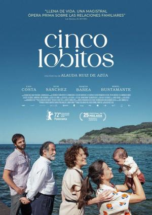
Amaia (Laia Costa) acaba de ser madre y se da cuenta de que no
sabe muy bien cómo serlo. Al ausentarse su pareja por trabajo unas semanas, decide volver
a casa de sus padres, en un bonito pueblo costero del País Vasco, y así compartir la
responsabilidad de cuidar a su bebé. Lo que no sabe Amaia es que, aunque ahora sea madre,
no dejará de ser hija.En Islandia, en pleno siglo X, un príncipe nórdico (Skarsgard)
busca vengar a toda costa la muerte de su padre.
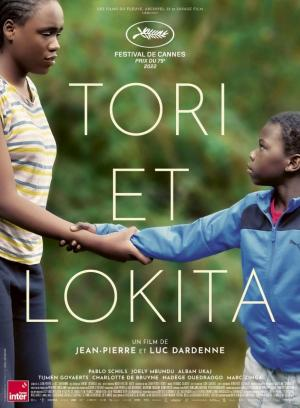
En la Bélgica actual, un niño y una chica adolescente que llegaron
solos de África enfrentan su invencible amistad contra las difíciles condiciones de su exilio.
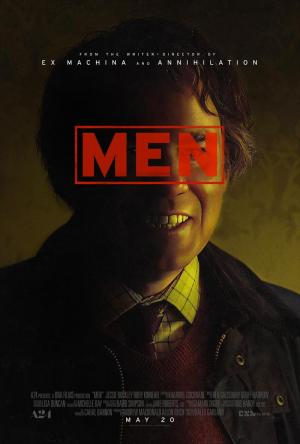
Tras sufrir una tragedia personal, Harper (Jessie Buckley) se
retira sola a la hermosa campiña inglesa, con la esperanza de haber encontrado el lugar
ideal para curarse. Pero algo o alguien parece estar acechándola. Lo que comienza como un
pavor latente terminará convirtiéndose en una auténtica pesadilla, habitada por sus recuerdos
y miedos más oscuros.
Fantásia
Más de una década después de los acontecimientos de 'Avatar',
los Na'vi Jake Sully, Neytiri y sus hijos viven en paz en los bosques de Pandora hasta que
regresan los hombres del cielo. Entonces comienzan los problemas que persiguen sin descanso a la
familia Sully, que decide hacer un gran sacrificio para mantener a su pueblo a salvo y seguir ellos
con vida.Cuando una ruptura interdimensional altera la realidad, Evelyn
(Michelle Yeoh), una inmigrante china en Estados Unidos, se ve envuelta en una aventura salvaje
en la que solo ella puede salvar el mundo. Perdida en los mundos infinitos del multiverso, esta
heroína inesperada debe canalizar sus nuevos poderes para luchar contra los extraños y
desconcertantes peligros del multiverso mientras el destino del mundo pende de un hiloCuatro años después de la destrucción de Isla Nublar, los dinosaurios
ahora conviven -y cazan- con los seres humanos en todo el mundo. Este frágil equilibrio remodelará
el futuro y determinará, de una vez por todas, si los seres humanos seguirán en la cúspide de los
depredadores en un planeta que comparten con los animales más temibles de la creación.Versión musical en animación stop motion del famoso cuento de 'Pinocho',
ambientada en la Italia fascista, durante la década de 1930. Guillermo del Toro y Mark Gustafson
dirigen esta película, que en la versión original cuenta con un reparto estelar de voces: Ewan
McGregor (Pepito Grillo), David Bradley (Geppetto) y el debutante Gregory Mann (Pinocho).
También participan Finn Wolfhard, Cate Blanchett, John Turturro, Ron Perlman, Tim Blake Nelson,
Burn Gorman, Christoph Waltz y Tilda Swinton.La reina Ramonda (Angela Bassett), Shuri (Letitia Wright),
M’Baku (Winston Duke), Okoye (Danai Gurira) y las Dora Milaje (incluida Florence Kasumba),
luchan para proteger su nación de la injerencia de potencias mundiales a raíz de la muerte del
rey T’Challa. Mientras los wakandianos se esfuerzan por adaptarse a su nueva etapa, los héroes
deben actuar unidos, con la ayuda del Perro de la Guerra Nakia (Lupita Nyong’o) y Everett Ross
(Martin Freeman), y forzar un nuevo destino para el reino de Wakanda.Dos rancheros de un remoto pueblo del interior de California hacen un
descubrimiento tan insólito como escalofriante.Viaja a lo desconocido con el Doctor Strange, quien, con la ayuda
de tanto antiguos como nuevos aliados místicos, recorre las complejas y peligrosas realidades
alternativas del multiverso para enfrentarse a un nuevo y misterioso adversario.Mei Lee, una niña de 13 años un poco rara pero segura de sí misma,
se debate entre ser la hija obediente que su madre quiere que sea y el caos propio de la
adolescencia. Ming, su protectora y ligeramente exigente madre, no se separa nunca de ella
lo que es una situación poco deseable para una adolescente. Y por si los cambios en su vida
y en su cuerpo no fueran suficientes, cada vez que se emociona demasiado (lo que le ocurre
prácticamente todo el tiempo), se convierte en un panda rojo gigante.
Intriga
Después de dos años acechando por las calles de la ciudad como Batman
(Robert Pattinson), e infundiendo miedo en las mentes perversas de los criminales, Bruce Wayne está
sumido en las profundidades de las sombras de Gotham City. Este vigilante solitario cuenta con pocos
aliados de confianza y eso le ha llevado a convertirse en la única encarnación de la venganza entre
sus conciudadanos. Cuando un asesino apunta a la élite de Gotham con una serie de maquinaciones
sádicas, un rastro de pistas crípticas lleva a Batman a realizar una investigación en el inframundo.Dos rancheros de un remoto pueblo del interior de California hacen un
descubrimiento tan insólito como escalofriante.Hae-Joon, un veterano detective, investiga la sospechosa muerte de
un hombre en la cima de una montaña. Pronto, comenzará a sospechar de Sore, la mujer del
difunto, mientras la atracción que siente por ella le desestabilizará.Cuando el multimillonario Miles Bron (Edward Norton) invita a algunos de
sus allegados a una escapada a su isla griega privada, pronto queda claro que no todo es perfecto
en el paraíso. Y cuando alguien aparece muerto, ¿quién mejor que Benoit Blanc para desentrañar
todas las capas del misterio?Diego, urbanista venezolano, y Elena, bailarina de Barcelona, se
mudan a Estados Unidos con sus visados aprobados para empezar una nueva vida. Su intención
es impulsar sus carreras profesionales y formar una familia en "la tierra de las oportunidades".
Pero al entrar en la zona de inmigración del aeropuerto de Nueva York son conducidos a la
sala de inspección secundaria, donde serán sometidos a un desagradable proceso de inspección
por los agentes de aduanas y a un interrogatorio psicológicamente extenuante, en un intento
de descubrir si la pareja puede tener algo que ocultar.Alice (Pugh) y Jack (Styles) tienen la suerte de vivir en la comunidad
idealizada de Victoria, una ciudad experimental creada por una compañía en donde los hombres
que trabajan para el "Proyecto Victoria", de alto secreto, viven con sus familias. Pero cuando
empiezan a aparecer grietas en su idílica vida, exponiendo destellos de algo mucho más siniestro
que se esconde bajo la atractiva fachada, Alice no puede evitar cuestionarse exactamente qué
están haciendo en Victoria, y por qué.
Musical
Versión musical en animación stop motion del famoso cuento de 'Pinocho',
ambientada en la Italia fascista, durante la década de 1930. Guillermo del Toro y Mark Gustafson
dirigen esta película, que en la versión original cuenta con un reparto estelar de voces: Ewan
McGregor (Pepito Grillo), David Bradley (Geppetto) y el debutante Gregory Mann (Pinocho). También
participan Finn Wolfhard, Cate Blanchett, John Turturro, Ron Perlman, Tim Blake Nelson, Burn Gorman,
Christoph Waltz y Tilda Swinton.
Romance
Cuenta la historia del primer amor entre Maren, una joven que está
aprendiendo a sobrevivir al margen de la sociedad, y Lee, un vagabundo con ideas muy intensas
que vive marginado. Cuando se conocen, se unen en un viaje de mil millas que les lleva por
carreteras, pasajes ocultos y caminos alternos en los Estados Unidos de Ronald Reagan. Pero a
pesar de sus esfuerzos, todos los caminos conducen a sus aterradores pasados y a una última
parada que determinará si su amor puede sobrevivir a su forma de ser.Hae-Joon, un veterano detective, investiga la sospechosa muerte de
un hombre en la cima de una montaña. Pronto, comenzará a sospechar de Sore, la mujer del
difunto, mientras la atracción que siente por ella le desestabilizará.
Terror
Cuenta la historia del primer amor entre Maren, una joven que está
aprendiendo a sobrevivir al margen de la sociedad, y Lee, un vagabundo con ideas muy intensas
que vive marginado. Cuando se conocen, se unen en un viaje de mil millas que les lleva por
carreteras, pasajes ocultos y caminos alternos en los Estados Unidos de Ronald Reagan. Pero a
pesar de sus esfuerzos, todos los caminos conducen a sus aterradores pasados y a una última
parada que determinará si su amor puede sobrevivir a su forma de ser.Dos rancheros de un remoto pueblo del interior de California hacen un
descubrimiento tan insólito como escalofriante.Viaja a lo desconocido con el Doctor Strange, quien, con la ayuda
de tanto antiguos como nuevos aliados místicos, recorre las complejas y peligrosas realidades
alternativas del multiverso para enfrentarse a un nuevo y misterioso adversario.Tras sufrir una tragedia personal, Harper (Jessie Buckley) se
retira sola a la hermosa campiña inglesa, con la esperanza de haber encontrado el lugar
ideal para curarse. Pero algo o alguien parece estar acechándola. Lo que comienza como un
pavor latente terminará convirtiéndose en una auténtica pesadilla, habitada por sus recuerdos
y miedos más oscuros.
Thriller
Después de dos años acechando por las calles de la ciudad como Batman
(Robert Pattinson), e infundiendo miedo en las mentes perversas de los criminales, Bruce Wayne está
sumido en las profundidades de las sombras de Gotham City. Este vigilante solitario cuenta con pocos
aliados de confianza y eso le ha llevado a convertirse en la única encarnación de la venganza entre
sus conciudadanos. Cuando un asesino apunta a la élite de Gotham con una serie de maquinaciones
sádicas, un rastro de pistas crípticas lleva a Batman a realizar una investigación en el inframundo.Inspirada en la historia real del fiscal Julio Strassera,
Luis Moreno Ocampo y su joven equipo jurídico que se atrevieron a acusar, contra viento
y marea, a contrarreloj y bajo constante amenaza, a los altos mandos de la sangrienta dictadura
militar argentina (1976-1983) en el llamado Juicio a las Juntas de mediados de los años 80. Una
batalla de David contra Goliat, con los héroes menos esperados.Antoine y Olga son una pareja francesa que se instaló hace tiempo en
una aldea del interior de Galicia. Allí llevan una vida tranquila, aunque su convivencia con los
lugareños no es tan idílica como desearían. Un conflicto con sus vecinos, los hermanos Anta, hará
que la tensión crezca en la aldea hasta alcanzar un punto de no retorno.Basada en la historia real, "Trece vidas" es el relato del rescate de un
equipo de fútbol de la cueva de Tham Luang, en Tailandia, tras quedar atrapado por las lluvias
torrenciales y peligrosas inundaciones.Cinco asesinos a sueldo se encuentran a bordo de un tren bala que
viaja de Tokio a Morioka con unas pocas paradas intermedias. Descubren que sus misiones no
son ajenas entre sí. La pregunta es quién saldrá vivo del tren y qué les espera en la
estación final.Cárcel Modelo. Barcelona, 1977. Manuel (Miguel Herrán), un joven
contable, encarcelado y pendiente de juicio por cometer un desfalco, se enfrenta a una posible
pena de entre 10 y 20 años, un castigo desproporcionado para la cuantía de su delito. Pronto,
junto a su compañero de celda, Pino (Javier Gutiérrez), se une a un grupo de presos comunes que
se está organizando para exigir una amnistía. Se inicia una guerra por la libertad que hará
tambalearse al sistema penitenciario español. Si las cosas están cambiando fuera, dentro también
tendrán que hacerlo.Diego, urbanista venezolano, y Elena, bailarina de Barcelona, se
mudan a Estados Unidos con sus visados aprobados para empezar una nueva vida. Su intención
es impulsar sus carreras profesionales y formar una familia en "la tierra de las oportunidades".
Pero al entrar en la zona de inmigración del aeropuerto de Nueva York son conducidos a la
sala de inspección secundaria, donde serán sometidos a un desagradable proceso de inspección
por los agentes de aduanas y a un interrogatorio psicológicamente extenuante, en un intento
de descubrir si la pareja puede tener algo que ocultar.Tras sufrir una tragedia personal, Harper (Jessie Buckley) se
retira sola a la hermosa campiña inglesa, con la esperanza de haber encontrado el lugar
ideal para curarse. Pero algo o alguien parece estar acechándola. Lo que comienza como un
pavor latente terminará convirtiéndose en una auténtica pesadilla, habitada por sus recuerdos
y miedos más oscuros.Alice (Pugh) y Jack (Styles) tienen la suerte de vivir en la comunidad
idealizada de Victoria, una ciudad experimental creada por una compañía en donde los hombres
que trabajan para el "Proyecto Victoria", de alto secreto, viven con sus familias. Pero cuando
empiezan a aparecer grietas en su idílica vida, exponiendo destellos de algo mucho más siniestro
que se esconde bajo la atractiva fachada, Alice no puede evitar cuestionarse exactamente qué
están haciendo en Victoria, y por qué.